Portraits printed, torn by hand, and rebuilt into faces that never existed.
A portrait is usually treated as a single, indivisible record of one person at one moment. Layering takes that record apart. Each piece in the series starts as a set of straight black & white portraits, shot plainly against a flat wall so nothing in the frame competes with the face.
Those prints are then torn by hand — never cut — and the fragments are re-registered against one another: an eye from one sitter laid into the brow line of the next, a jaw borrowed from a third. The torn edge is the whole point. A scissor cut would read as a graphic decision; a torn edge reads as damage, and damage is what makes the seam visible.
The seam is not a flaw to be hidden. It is the subject.
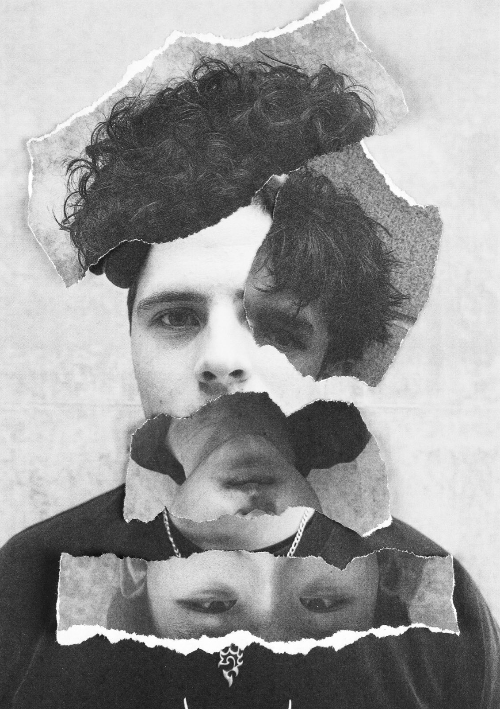
Reassembled this way, the eye keeps trying to resolve the image into one person and keeps failing. The fragments are close enough in scale and tone to read as a single head, but the mismatched directions of gaze — one fragment upright, the next inverted — stop the face from ever settling. Several pieces in the series push this further by rotating a fragment 180°, so a mouth becomes an eye socket and the portrait reads as a face only from a distance.
Not every piece is a head. One frame applies the same treatment to a figure on gymnastics bars: the torn fragment isolates the body mid-movement and drops the rest of the gym away, so the structure behind the subject survives only as a ghost at the edges.
The series also runs in a second direction, where the layering happens in the camera rather than on the table. A box jump and a rowing ergo are each shot as a stack of exposures on one frame, so a single athlete appears four or five times across the sweep of their own movement. It is the same question as the torn prints — how many versions of a person can occupy one image before it stops being a portrait — asked without any paper.
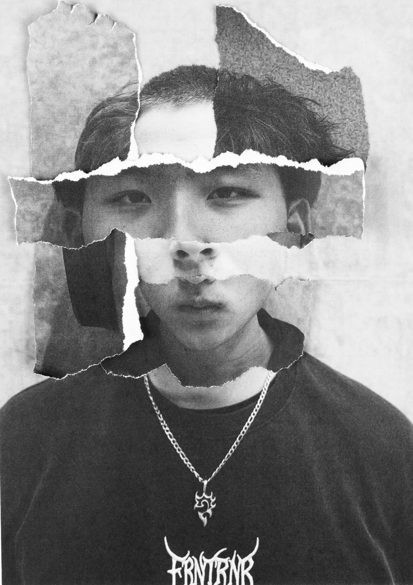
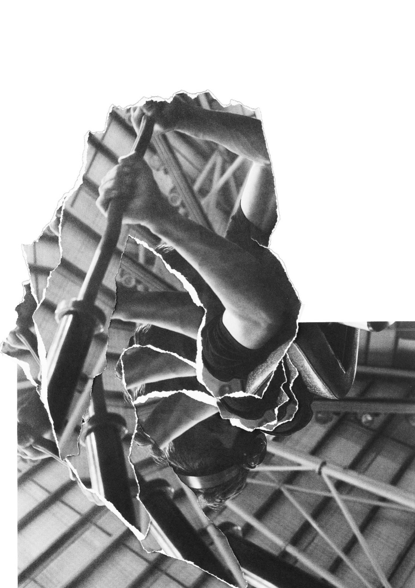
It is the clearest example of a working habit: take an established format, remove the thing that makes it safe, and see what is still legible afterwards. The series is also physical — every print was handled, torn and ruined before it was any good, and none of it can be undone with a history palette.
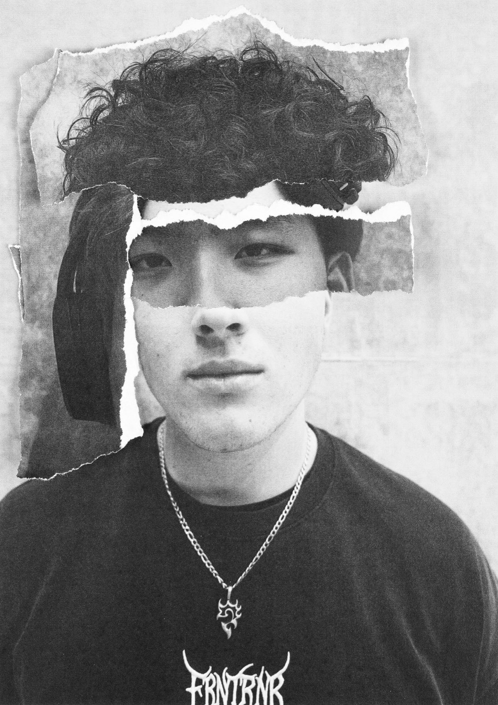
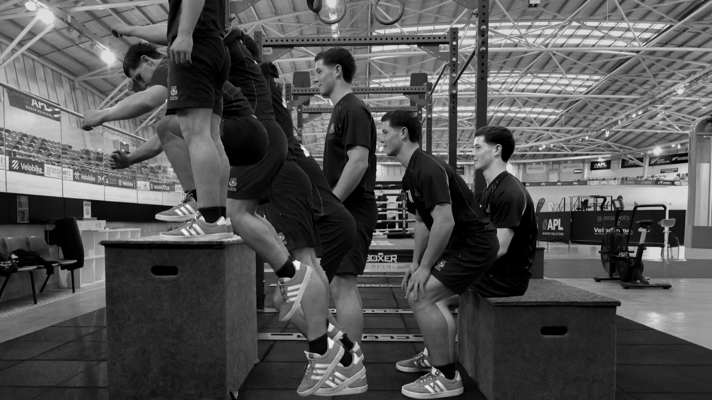
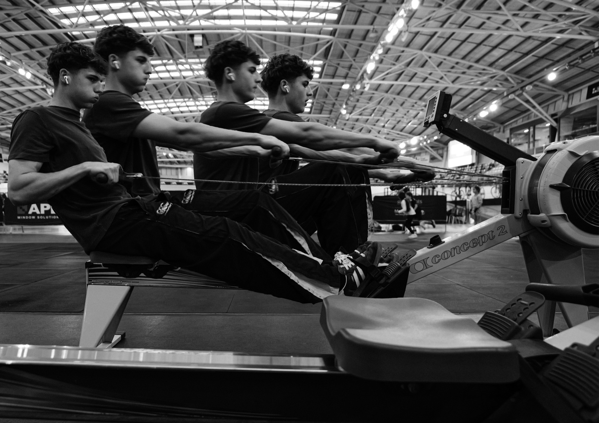
The whole series — torn-paper composites, the sheets photographed on their mounts, and the in-camera multiple exposures. Click any image to view it full screen; use the arrow keys to move through the set.
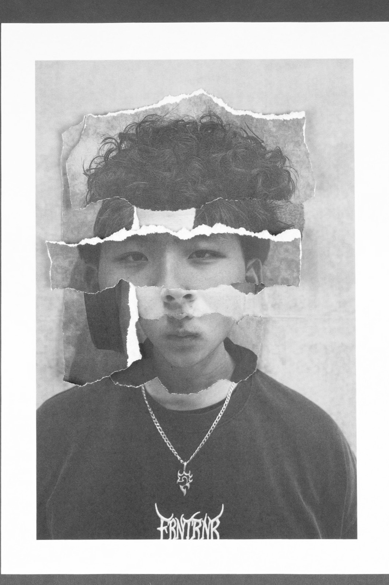
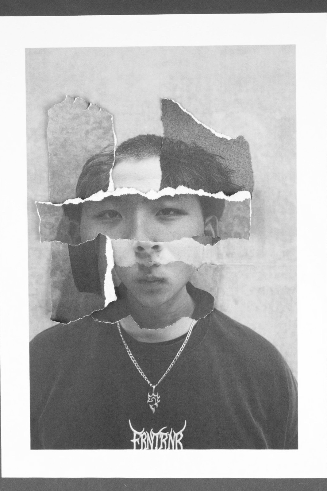
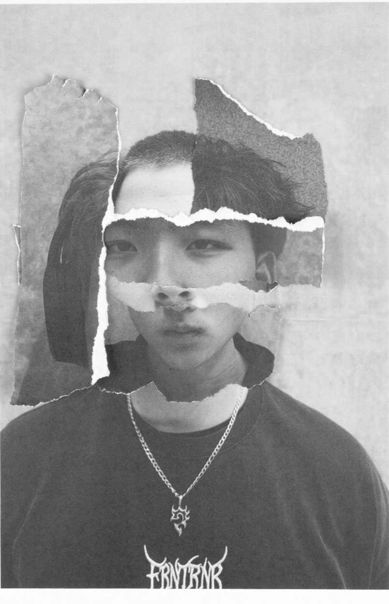
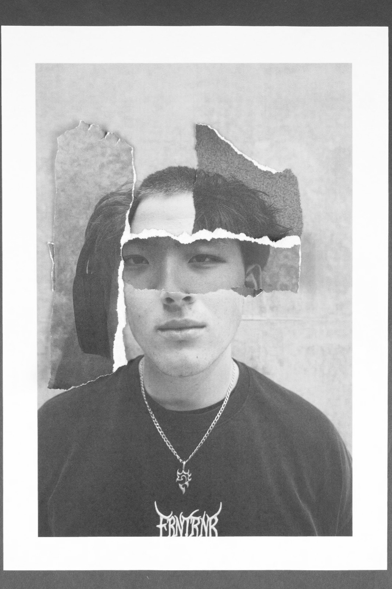
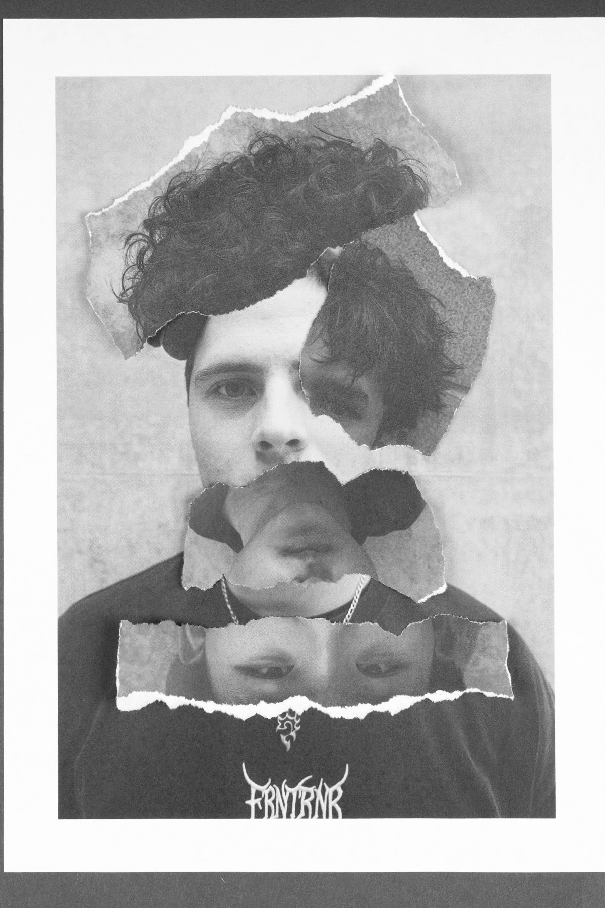
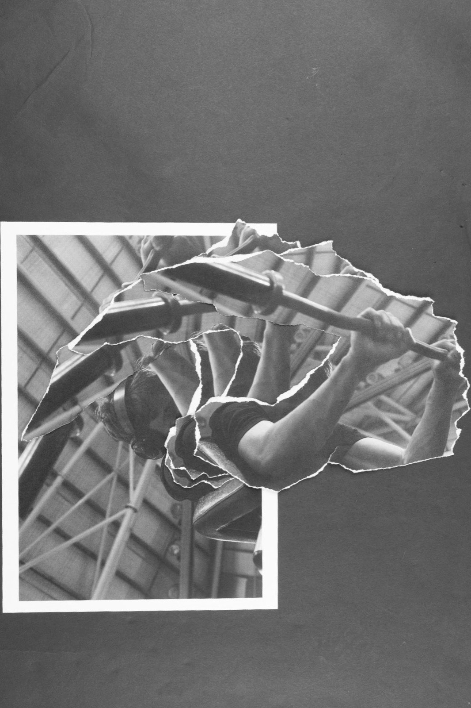
Happy to walk through the process, the outtakes, and what I'd do differently.